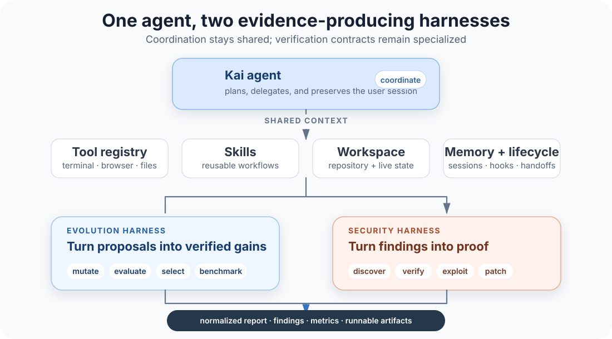
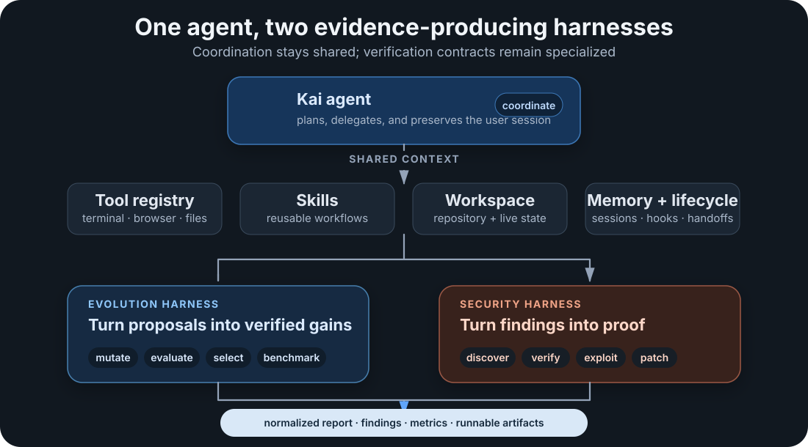
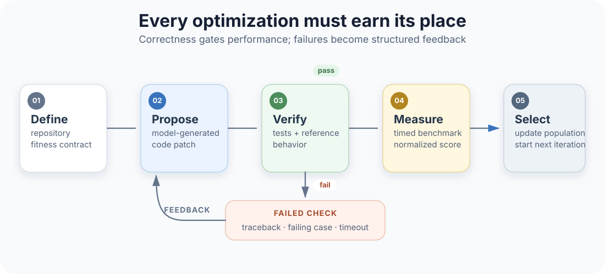
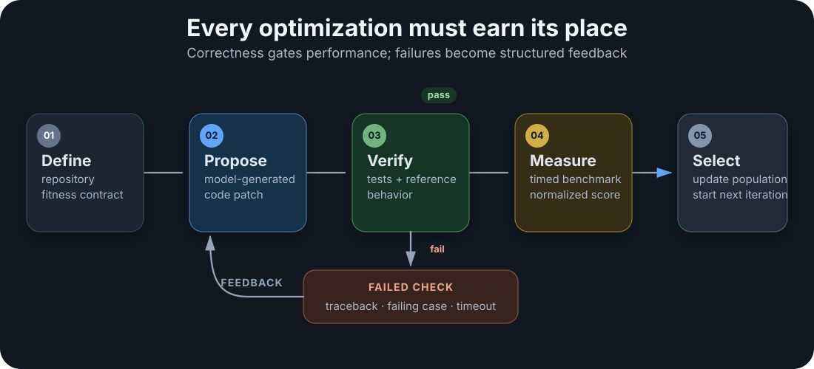

Project Write-Up
Kai: A Verifier-First Autonomous Codebase Engineer
TL;DR. I co-developed Kai, an autonomous codebase engineer for security analysis and software optimization. My work connected the ideas I had explored in OpenEvolve with a broader agent system: specialist verification and evolution harnesses, structured evidence, developer-facing interfaces, and isolated execution through E2B micro-VMs and Vercel sandboxes. We evaluated Kai on EVMBench and GSO, but the part that mattered most to me was the engineering principle behind both results: generated code or findings count only after an independent verifier produces runnable evidence.
What I Helped Build
I helped develop Kai from a coding-agent prototype into an always-on codebase engineer. It had to work across two very different tasks. In optimization mode, it evolved real code against developer-defined correctness and performance tests. In security mode, it searched for vulnerabilities, checked whether they were reachable and economically meaningful, produced an exploit, and proposed a patch.
My work sat at the intersection of agent infrastructure, evaluation, and execution. I brought lessons from OpenEvolve and EvolveBench into the optimization workflow, and I helped connect the specialist harnesses to the product surfaces and isolated environments needed for longer autonomous runs. That changed the question from "can the model suggest a patch?" to "can the system execute, verify, measure, and report that patch without asking a human to reconstruct what happened?"
From Generation to Evidence
We designed Kai around one coordinating agent and two specialist harnesses. The agent maintains conversation and workspace context, while the security and optimization harnesses own their evaluation contracts. Both return normalized reports containing status, findings, artifacts, and metrics.


The key invariant was simple: if Kai could not verify a security finding or confirm that an optimization remained correct, the result stayed unverified. I found this separation useful because generation and judgment fail differently. A model can propose many plausible changes, but the harness decides which ones are allowed to affect the final answer.
Building the Optimization Workflow
Kai Evolve applies the verifier-first idea to performance work. A language model proposes a code change, but that change contributes to the search only after it passes the task's correctness tests and produces a measured runtime improvement. Developer-defined fitness functions let the same evolution engine target different repositories without coupling those objectives to the agent core.


We reused Thompson sampling1 from our OpenEvolve work to route proposals among three models according to recent performance rather than fixed alternation. In the reported run, GPT-5.2 Codex received 36.2% of selections, Claude Sonnet 4.5 received 34.6%, and Grok 4.1 Fast received 29.2%. The relatively even allocation showed that no single model dominated every task.
Building the Security Workflow
The same verifier-first idea carries over to security work, where findings are especially vulnerable to confident false positives. We treated verification as a program-analysis pipeline rather than another model response. Candidate bugs moved through focused static analysis, reachability tracing, state-transition reasoning, an assessment of real economic impact, and finally a runnable exploit test.
- Research the protocol. Map the architecture, trust boundaries, design patterns, and relevant threat model.
- Generate candidate findings. Inspect reentrancy, arithmetic, access control, oracle behavior, and economic invariants.
- Verify independently. Trace whether the vulnerable state is reachable and whether the claimed impact follows.
- Produce executable evidence. Write a Foundry test that triggers the exploit before reporting the finding as verified.
The public security_scan workflow packages discovery, verification, exploit construction, and patching into one sequence. We attach the finding, exploit, patch diff, and verification status to the report, which makes it possible to inspect the evidence instead of trusting a confidence score.
What Verified Findings Looked Like
Wildcat Protocol. We identified a withdrawal-batch rounding interaction in which half-up division was composed with floor rounding. Once the scale factor crossed a threshold, the normalized amount paid could exceed available liquidity and consume reserved funds. A Foundry test reproduced the corrupted accounting path. The historical bounty attached to the finding was $20,252.
Noya Protocol. We found that a multi-hop oracle passed the original asset into every hop instead of the intermediate token produced by the previous hop. A controlled A→B→C→D test showed that the composed price no longer matched the expected 24× result, creating a route to misprice deposits and withdrawals.
Making Generated Code Safe to Run
A useful autonomous engineer needs to execute code, preserve workspace state, and survive failures without putting the host environment at risk. I helped connect Kai to a provider-agnostic execution layer with hosted E2B micro-VMs as the default backend, ephemeral Vercel sandboxes as an alternative, and a local mode for development.
The execution layer also supported long-running work. A /teleport command copied the workspace and conversation state into a sandbox and resumed the session in a browser, while /hand-off dispatched an autonomous sub-agent in the background. These interfaces kept audits and optimization searches from blocking the main session and made the execution boundary visible to the user.
I also worked on making Kai usable where engineering teams already communicate. The project exposed a terminal REPL and local web UI, plus adapters for Slack, Discord, Telegram, and email. A plugin system with pre-call, post-call, result-transformation, session-start, and session-end hooks let custom policies and logging wrap every tool call without forking the agent core.
What the Benchmarks Established
We evaluated the security and optimization workflows separately because they measure different capabilities. EVMBench Detect asks whether the agent recovers known high-severity vulnerabilities from historical audits. GSO asks whether a correct patch reaches at least 95% of the runtime improvement achieved by an expert developer.
| Benchmark | Reported result | Evaluation scope |
|---|---|---|
| EVMBench Detect | 64.2% recall | 40 audits, original 120-finding release |
| EVMBench Detect Award | $74,707 | Cumulative historical bounty value |
| GSO | 53.3% Opt@1 | 30 compatible tasks, up to 300 iterations |
| GSO task outcomes | 29 of 30 improved, 6 exceeded expert | Same selected 30-task subset |
Table 1. Team-level results reported in the March 2026 benchmark release. The two benchmarks measure different capabilities and should not be combined into one score.
Against other systems evaluated on the same 120-finding EVMBench release, our Detect Recall led by a wide margin:
| System | Detect Recall |
|---|---|
| Kai | 64.2% |
| Claude Opus 4.6 | 45.6% |
| GPT-5.3 Codex | 39.2% |
| OAI-OPT-5.2 | 30.0% |
| OPT-5 | 25.5% |
| OpenAI o3 | 10.6% |
Table 2. Detect Recall values we measured, alongside other systems' published results. Scaffold, model, and denominator details differ across systems.
The GSO leaderboard from the same release shows a similar gap, though our row is not a like-for-like entry: it covers 30 compatible tasks rather than the official 102-task set, at a different compute budget.
| System | Organization | Opt@1 | Scope |
|---|---|---|---|
| Kai Evolve | Dria | 53.30% | 30 compatible tasks |
| Claude 4.6 Opus | Anthropic | 33.33% | Official 102-task board |
| GPT-5.2 (high) | OpenAI | 27.45% | Official 102-task board |
| Claude 4.5 Opus | Anthropic | 26.47% | Official 102-task board |
| Gemini 3 Pro | 18.63% | Official board | |
| Claude 4.5 Sonnet | Anthropic | 14.71% | Official board |
| GPT-5.1 (high) | OpenAI | 13.73% | Official board |
| Gemini 3 Flash | 9.80% | Official board | |
| o3 (high) | OpenAI | 8.82% | Official board |
| GPT-5 (high) | OpenAI | 6.86% | Official board |
| Claude 4 Opus | Anthropic | 6.86% | Official board |
| Qwen3-Coder | Qwen | 4.90% | Official board |
| Kimi K2 Instruct | Moonshot AI | 4.90% | Official board |
| Claude 3.5 v2 Sonnet | Anthropic | 4.60% | Official board |
| Gemini 2.5 Pro | 3.92% | Official board | |
| Claude 4 Sonnet | Anthropic | 3.92% | Official board |
| Claude 3.7 Sonnet | Anthropic | 3.80% | Official board |
| o4-mini (high) | OpenAI | 3.60% | Official board |
| GLM-4.5-Air | Z.ai | 2.94% | Official board |
| o3-mini (high) | OpenAI | 1.30% | Official board |
| GPT-4o | OpenAI | 0.00% | Official board |
Table 3. Leaderboard values from our March 2026 benchmark release. Our row uses a different task count and compute budget than the official full-set entries below it, so it should be read as a directional comparison rather than a controlled head-to-head.
For me, the useful result was not only the headline score. Both benchmarks rewarded the same system behavior: preserve an explicit contract, reject unsupported claims, and return evidence that another engineer can inspect. The verifier made the agent more useful by reducing the amount of trust required from the user.
What I Learned
- Generation is the cheap part. The harder engineering problem is deciding whether a patch or finding deserves to leave the sandbox.
- Verification should produce artifacts. A test, exploit, traceback, benchmark, or patch diff is more useful than an unsupported confidence score.
- Execution boundaries are part of agent design. Sandboxes, handoffs, timeouts, and preserved state determine which long-running tasks are practical.
- Specialist harnesses need a shared contract. Normalized status, findings, artifacts, and metrics let one coordinating agent work across very different domains.
- Adaptive routing needs measured feedback. Multiple models help only when the system can compare recent outcomes and preserve productive search trajectories.
References
- On the Likelihood that One Unknown Probability Exceeds Another in View of the Evidence of Two Samples [DOI]
Thompson, W.R., 1933. Biometrika, 25(3–4), pp.285–294.